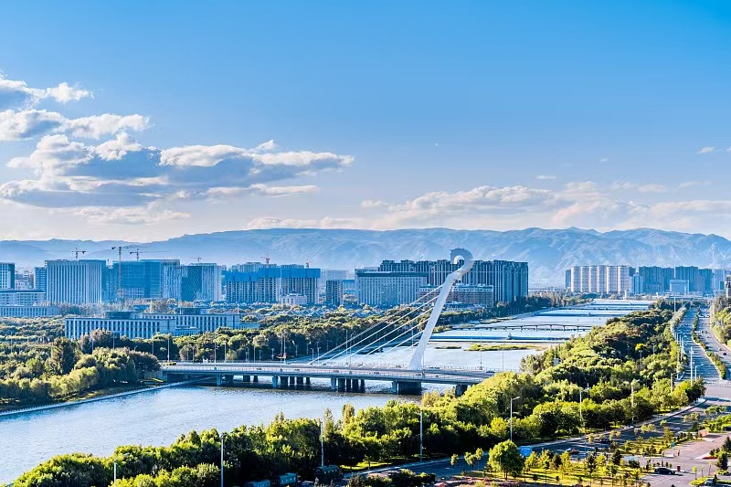
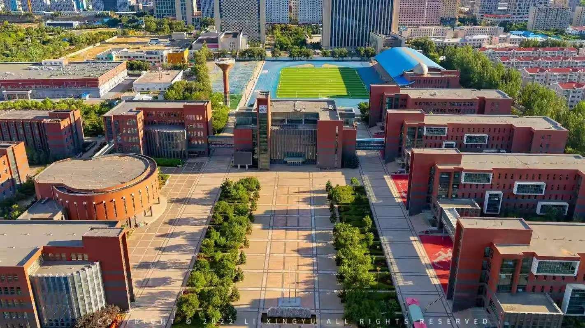

呼和浩特，蒙古语意为“青色的城”，也被大家亲切地叫做“青城”，是内蒙古自治区的首府，也是一座草原文化与现代文明交融的城市。
这里既有草原的辽阔与豪迈，也有城市的温暖与烟火气。夏天的呼和浩特清爽宜人，是有名的“避暑天堂”；冬天的街道被白雪覆盖，配上暖黄色的灯光，又多了几分温柔。
走在街头，你能听到带着草原气息的蒙语吆喝，也能吃到热气腾腾的手把肉、喷香的奶茶和外酥里嫩的焙子。大召寺的红墙白塔见证着城市的历史，塞上老街的青砖灰瓦里藏着老呼和浩特的故事，而宽阔的新华大街和高楼林立的新城，又展现着这座城市的活力与未来。
我生长在这片土地上，这里的风、这里的云、这里的烟火气，都早已刻进了我的记忆里。

呼和浩特市第二中学，是我学习成长的地方，也是我青春里最温暖的一段时光。
这所学校有着悠久的办学历史，从建校至今，始终以严谨的学风和浓厚的人文氛围，滋养着一届又一届的学子。走进校园，整洁的教学楼里传来朗朗书声，操场的跑道上有我们奔跑的身影，图书馆的书架间藏着我们探索世界的好奇心。
在这里，我们不仅学到了知识，更学会了坚持与成长。课堂上，老师耐心地为我们讲解难题；课后，同学们一起讨论问题、分享心事，运动会上的呐喊声、艺术节上的歌声、晚自习的灯光，都成了我们最珍贵的回忆。
二中教会我的，不只是书本上的内容，更是直面挑战的勇气和奔赴未来的底气。无论将来走到哪里，这里的时光都将是我最坚实的力量。
